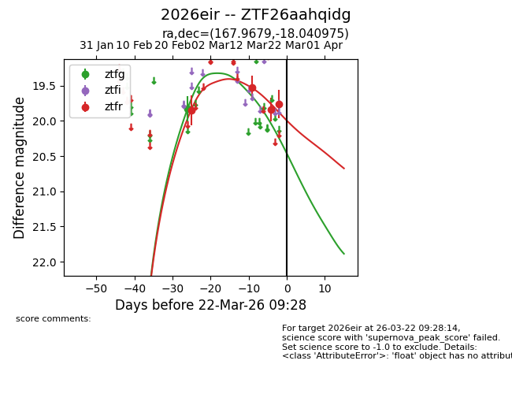
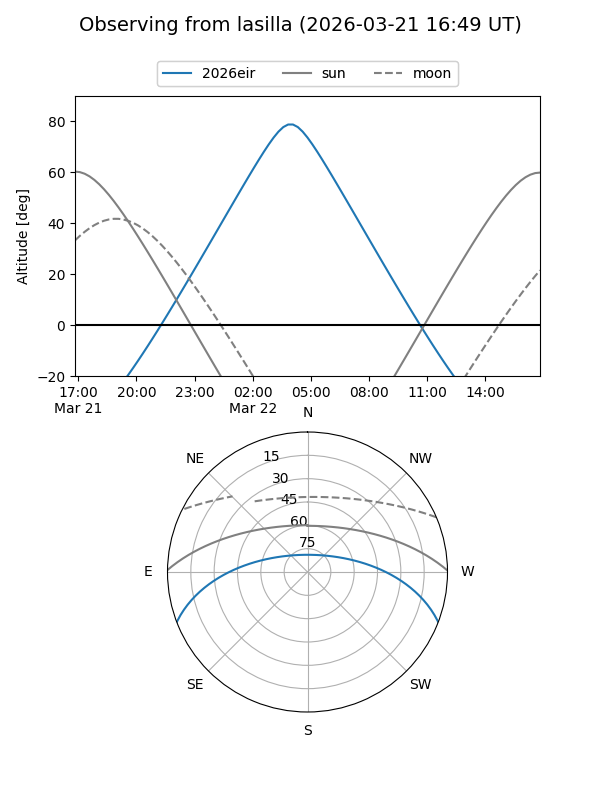
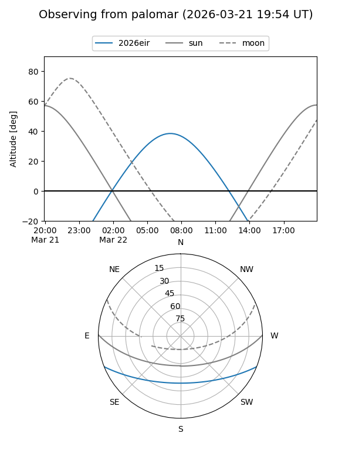
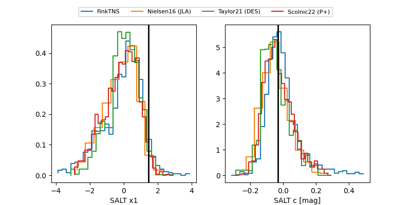

2026eir
Target 2026eir at 2026-03-22 09:30
Aliases and brokers:
FINK: link
Lasair: link
ALeRCE: link
TNS: link
YSE: link
alt names
ZTF26aahqidg (ztf,fink_ztf)
2026eir (tns,yse)
Coordinates:
equatorial (ra, dec) = 167.9679,-18.04098
equatorial (HMS+DMS) = 11:11:52.30,-18:02:27.51
galactic (l, b) = (272.0401,+38.78542)
Flags:
Photometry:
last ztfg=19.83, ztfr=19.76
1 ztfg, 4 ztfr detections
Lightcurve

Visibility


Additional plots
